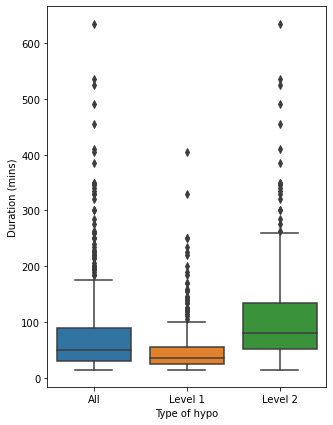
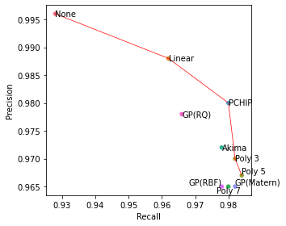
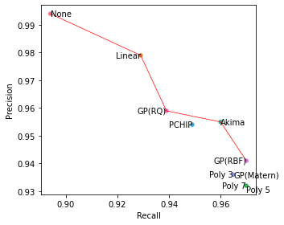
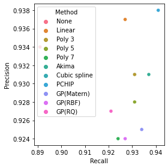
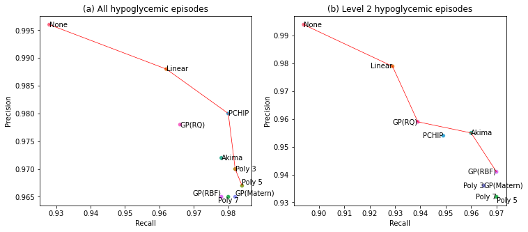

2. Exploratory data analysis#
In this notebook I explore the data in further detail
2.1. Upload packages and import data#
import pandas as pd
import numpy as np
import copy
from sklearn.metrics import r2_score, mean_squared_error, mean_absolute_error
import matplotlib.pyplot as plt
import seaborn as sns
import scipy.stats as stats
import warnings
warnings.filterwarnings('ignore')
pd.set_option('display.max_rows', None)
pd.set_option('display.max_columns', None)
%matplotlib inline
# Upload datasets
df = pd.read_csv('interp_dataset.csv')
df.dropna(subset=['glc'], inplace=True)
aligned_results = pd.read_csv('aligned_results_rounded.csv')
results_frame = pd.read_csv('confusion_matrix_hypos.csv')
# Define interp methods
cols = ['cut_glc', 'pchip', 'linear', 'cubicspline', 'akima', 'polynomial_3',
'polynomial_5', 'polynomial_7', 'matern', 'rq', 'rbf']
2.2. Data availability#
id_frame = pd.DataFrame([i.split('_') for i in set(df.ID)], columns=['id', 'period'])
data_availability = pd.melt(id_frame, id_vars='id').assign(val=1).drop_duplicates().pivot('id', 'value', 'val')
data_availability
| value | 6months | baseline |
|---|---|---|
| id | ||
| 1003 | 1.0 | 1.0 |
| 1004 | 1.0 | 1.0 |
| 1005 | 1.0 | NaN |
| 1007 | NaN | 1.0 |
| 1008 | NaN | 1.0 |
| 1010 | 1.0 | 1.0 |
| 1011 | NaN | 1.0 |
| 1012 | 1.0 | 1.0 |
| 1013 | 1.0 | 1.0 |
| 1014 | 1.0 | 1.0 |
| 1015 | NaN | 1.0 |
| 1019 | NaN | 1.0 |
| 1020 | NaN | 1.0 |
| 1021 | 1.0 | 1.0 |
| 1022 | NaN | 1.0 |
| 1024 | 1.0 | 1.0 |
| 1025 | 1.0 | 1.0 |
| 1026 | 1.0 | 1.0 |
| 1027 | 1.0 | 1.0 |
| 1029 | 1.0 | 1.0 |
| 1030 | NaN | 1.0 |
| 1031 | 1.0 | 1.0 |
| 1032 | 1.0 | 1.0 |
| 1034 | 1.0 | 1.0 |
| 1035 | 1.0 | 1.0 |
| 1040 | 1.0 | 1.0 |
| 1042 | NaN | 1.0 |
| 1045 | 1.0 | 1.0 |
| 1046 | 1.0 | 1.0 |
| 1047 | 1.0 | 1.0 |
| 1048 | 1.0 | 1.0 |
| 1049 | 1.0 | 1.0 |
| 1051 | 1.0 | 1.0 |
| 2001 | NaN | 1.0 |
| 2003 | 1.0 | 1.0 |
| 2004 | NaN | 1.0 |
| 2005 | 1.0 | 1.0 |
| 2008 | NaN | 1.0 |
| 2009 | NaN | 1.0 |
| 2010 | NaN | 1.0 |
| 2011 | 1.0 | 1.0 |
| 2012 | 1.0 | 1.0 |
| 2013 | NaN | 1.0 |
| 2016 | NaN | 1.0 |
| 2017 | 1.0 | 1.0 |
| 2018 | NaN | 1.0 |
| 2019 | 1.0 | 1.0 |
| 2020 | NaN | 1.0 |
| 2023 | NaN | 1.0 |
| 2024 | 1.0 | 1.0 |
| 2026 | NaN | 1.0 |
| 2027 | 1.0 | NaN |
| 2028 | NaN | 1.0 |
| 2029 | 1.0 | 1.0 |
| 2030 | 1.0 | 1.0 |
| 2031 | 1.0 | 1.0 |
| 2032 | 1.0 | 1.0 |
| 2034 | NaN | 1.0 |
| 2035 | NaN | 1.0 |
| 2036 | 1.0 | 1.0 |
| 2038 | 1.0 | NaN |
| 2039 | NaN | 1.0 |
| 2040 | 1.0 | 1.0 |
| 2041 | 1.0 | 1.0 |
| 2042 | 1.0 | NaN |
| 2043 | 1.0 | 1.0 |
| 2045 | 1.0 | 1.0 |
# Number of missing traces
data_availability.shape[0] - data_availability.count()
value
6months 24
baseline 4
dtype: int64
2.3. Statistical significance with chi2 test#
results_frame.head()
| method | lv | TP | FN | FP | recall | prec | csi | |
|---|---|---|---|---|---|---|---|---|
| 0 | cut_glc | all | 465 | 36 | 2 | 0.928 | 0.996 | 0.924 |
| 1 | linear | all | 482 | 19 | 6 | 0.962 | 0.988 | 0.951 |
| 2 | rq | all | 484 | 17 | 11 | 0.966 | 0.978 | 0.945 |
| 3 | rbf | all | 490 | 11 | 18 | 0.978 | 0.965 | 0.944 |
| 4 | akima | all | 490 | 11 | 14 | 0.978 | 0.972 | 0.951 |
conf_matrix = results_frame[['method', 'lv', 'TP', 'FN', 'FP']]
p_list = []
for i, row in conf_matrix.iterrows():
data = pd.DataFrame([row.values, ['glc', 'glc', (row.TP + row.FN), 0, 0]])
data.set_index([0, 1], inplace=True)
try:
V, p, dof, expected = stats.chi2_contingency(data)
p_list.append([row['lv'], row.method, p])
except:
print('0 error')
continue
pd.DataFrame(p_list, columns=['hypo', 'method',
'p-value']).sort_values(['hypo', 'method'])
| hypo | method | p-value | |
|---|---|---|---|
| 4 | all | akima | 3.851839e-06 |
| 8 | all | cubicspline | 6.571543e-06 |
| 0 | all | cut_glc | 2.870173e-09 |
| 1 | all | linear | 3.155975e-06 |
| 7 | all | matern | 1.536305e-06 |
| 6 | all | pchip | 4.531046e-05 |
| 9 | all | polynomial_3 | 6.571543e-06 |
| 10 | all | polynomial_5 | 4.144050e-06 |
| 5 | all | polynomial_7 | 9.227503e-07 |
| 3 | all | rbf | 5.536615e-07 |
| 2 | all | rq | 7.609957e-07 |
| 20 | lv1 | akima | 2.106513e-09 |
| 17 | lv1 | cubicspline | 7.220979e-10 |
| 11 | lv1 | cut_glc | 2.572549e-12 |
| 15 | lv1 | linear | 1.081775e-09 |
| 19 | lv1 | matern | 4.837429e-10 |
| 21 | lv1 | pchip | 9.202316e-09 |
| 18 | lv1 | polynomial_3 | 7.220979e-10 |
| 16 | lv1 | polynomial_5 | 4.517102e-10 |
| 13 | lv1 | polynomial_7 | 9.625528e-11 |
| 14 | lv1 | rbf | 1.651791e-10 |
| 12 | lv1 | rq | 8.940088e-11 |
| 26 | lv2 | akima | 2.061998e-04 |
| 27 | lv2 | cubicspline | 5.189188e-05 |
| 22 | lv2 | cut_glc | 9.287751e-06 |
| 23 | lv2 | linear | 9.732368e-05 |
| 29 | lv2 | matern | 5.189188e-05 |
| 25 | lv2 | pchip | 7.233214e-05 |
| 28 | lv2 | polynomial_3 | 5.189188e-05 |
| 30 | lv2 | polynomial_5 | 5.443095e-05 |
| 31 | lv2 | polynomial_7 | 5.443095e-05 |
| 32 | lv2 | rbf | 1.395116e-04 |
| 24 | lv2 | rq | 4.057910e-05 |
2.4. Distribution in duration of episodes#
# Convert the duration of hypos to minutes
aligned_results['5_min_diff'] = pd.to_timedelta(aligned_results['5_min_diff']).astype('timedelta64[m]')
# Only need one method from aligned_results
df_results = aligned_results.loc[aligned_results['col']=='cut_glc']
# Set up a new dataframe for comparing the describe() metrics for each level
df_duration = pd.DataFrame()
df_duration['all'] = df_results['5_min_diff'].describe()
df_duration['lv1'] = df_results[df_results['5_min_lv2']==False]['5_min_diff'].describe()
df_duration['lv2'] = df_results[df_results['5_min_lv2']==True]['5_min_diff'].describe()
df_duration.round(2)
| all | lv1 | lv2 | |
|---|---|---|---|
| count | 501.00 | 303.00 | 198.00 |
| mean | 77.59 | 50.64 | 118.83 |
| std | 83.42 | 49.89 | 104.98 |
| min | 15.00 | 15.00 | 15.00 |
| 25% | 30.00 | 25.00 | 51.25 |
| 50% | 50.00 | 35.00 | 80.00 |
| 75% | 90.00 | 55.00 | 135.00 |
| max | 635.00 | 405.00 | 635.00 |
# Number of hyps over 120 mins
df_results[df_results['5_min_diff']>120]['ID'].count()
82
# Prepare data for a seaborn boxplot by renaming variables
df_results['Level'] = df_results['5_min_lv2'].replace({True: 'Level 2', False:
'Level 1'})
# Copy dataframe to add an all column to figure
df_all = copy.copy(df_results)
df_all['Level'] = 'All'
df_results_concat = pd.concat([df_results, df_all])
fig, ax = plt.subplots(figsize=(5,7))
ax = sns.boxplot('Level', '5_min_diff', data=df_results_concat, order=['All', 'Level 1', 'Level 2'])#, hue='lv2')
ax.set(xlabel='Type of hypo', ylabel='Duration (mins)')
fig.savefig('length_of_hypos_boxplot.svg')

2.5. Calculate RMSE#
def metrics_calc(df, col, base_col):
'''
Evaluate each method using R2, RMSE and MAE and add to dataframe
'''
return {'Name':col,'R2':r2_score(df[base_col], df[col]),
'RMSE':mean_squared_error(df[base_col], df[col], squared=True),
'MAE':mean_absolute_error(df[base_col], df[col])}
# Delete 15 min column and leave only interp methods
df_rmse = df[pd.isnull(df['cut_glc'])].drop(columns=['cut_glc'])
df_rmse.dropna(inplace=True)
# Also delete from list of methods
interp_methods = ['pchip', 'linear', 'cubicspline', 'akima', 'polynomial_3',
'polynomial_5', 'polynomial_7', 'matern', 'rq', 'rbf']
# Declare list for results
frame_results = []
# Call metrics_calc on all of the methods to calculate accuracy
for col in interp_methods:
frame = frame_results.append(metrics_calc(df_rmse, col, 'glc'))
# Convert to dataframe
frame = pd.DataFrame(frame_results, columns=['Name', 'R2', 'RMSE', 'MAE'])
frame.sort_values('RMSE')
| Name | R2 | RMSE | MAE | |
|---|---|---|---|---|
| 8 | rq | 0.995815 | 0.082220 | 0.125531 |
| 3 | akima | 0.995624 | 0.085962 | 0.125566 |
| 0 | pchip | 0.995623 | 0.085981 | 0.125231 |
| 1 | linear | 0.995579 | 0.086849 | 0.134658 |
| 2 | cubicspline | 0.995337 | 0.091609 | 0.126091 |
| 4 | polynomial_3 | 0.995337 | 0.091609 | 0.126091 |
| 5 | polynomial_5 | 0.995071 | 0.096833 | 0.130113 |
| 9 | rbf | 0.994593 | 0.106219 | 0.138287 |
| 6 | polynomial_7 | 0.994577 | 0.106528 | 0.134706 |
| 7 | matern | 0.994453 | 0.108973 | 0.137057 |
# Calculate metrics_calc for hypoglycaemia threshold
df_hypo = df_rmse[(df_rmse.glc<4.5)&(df_rmse.glc>2.5)]
# Declare list for results
results_hypo = []
# Loop through each method to calculate accuracy vs 5 min readings
for col in interp_methods:
frame_hypo = results_hypo.append(metrics_calc(df_hypo, col, 'glc'))
# Convert to dataframe
frame_hypo = pd.DataFrame(results_hypo, columns=['Name', 'R2', 'RMSE', 'MAE'])
frame_hypo.sort_values('RMSE')
| Name | R2 | RMSE | MAE | |
|---|---|---|---|---|
| 2 | cubicspline | 0.867953 | 0.034112 | 0.102568 |
| 4 | polynomial_3 | 0.867953 | 0.034112 | 0.102568 |
| 5 | polynomial_5 | 0.865005 | 0.034873 | 0.105026 |
| 7 | matern | 0.863443 | 0.035277 | 0.104924 |
| 0 | pchip | 0.863110 | 0.035363 | 0.105301 |
| 6 | polynomial_7 | 0.861547 | 0.035766 | 0.107452 |
| 3 | akima | 0.861050 | 0.035895 | 0.105250 |
| 9 | rbf | 0.858292 | 0.036607 | 0.109469 |
| 8 | rq | 0.852919 | 0.037995 | 0.107785 |
| 1 | linear | 0.837025 | 0.042101 | 0.118770 |
2.6. Precision-recall Pareto front plots#
# Replace labels for legend of plot
names = {'cut_glc':'None', 'linear':'Linear',
'absexp':'GP(Abs exp)', 'akima':'Akima',
'matern':'GP(Matern)', 'pchip':'PCHIP',
'rbf':'GP(RBF)', 'cubicspline':'Cubic spline',
'polynomial_3':'Poly 3', 'rq': 'GP(RQ)', 'polynomial_5':'Poly 5',
'polynomial_7':'Poly 7'}
results_frame.method = results_frame.method.replace(names)
# Order of legend
hue_order = ['None', 'Linear', 'Poly 3', 'Poly 5', 'Poly 7', 'Akima',
'Cubic spline', 'PCHIP', 'GP(Matern)', 'GP(RBF)', 'GP(RQ)']
# Rename columns
results_frame.columns = ['Method', 'lv', 'TP', 'FN', 'FP', 'Recall', 'Precision', 'CSI']
results_frame
| Method | lv | TP | FN | FP | Recall | Precision | CSI | |
|---|---|---|---|---|---|---|---|---|
| 0 | None | all | 465 | 36 | 2 | 0.928 | 0.996 | 0.924 |
| 1 | Linear | all | 482 | 19 | 6 | 0.962 | 0.988 | 0.951 |
| 2 | GP(RQ) | all | 484 | 17 | 11 | 0.966 | 0.978 | 0.945 |
| 3 | GP(RBF) | all | 490 | 11 | 18 | 0.978 | 0.965 | 0.944 |
| 4 | Akima | all | 490 | 11 | 14 | 0.978 | 0.972 | 0.951 |
| 5 | Poly 7 | all | 491 | 10 | 18 | 0.980 | 0.965 | 0.946 |
| 6 | PCHIP | all | 491 | 10 | 10 | 0.980 | 0.980 | 0.961 |
| 7 | GP(Matern) | all | 492 | 9 | 18 | 0.982 | 0.965 | 0.948 |
| 8 | Cubic spline | all | 492 | 9 | 15 | 0.982 | 0.970 | 0.953 |
| 9 | Poly 3 | all | 492 | 9 | 15 | 0.982 | 0.970 | 0.953 |
| 10 | Poly 5 | all | 493 | 8 | 17 | 0.984 | 0.967 | 0.952 |
| 11 | None | lv1 | 270 | 33 | 19 | 0.891 | 0.934 | 0.839 |
| 12 | GP(RQ) | lv1 | 279 | 24 | 22 | 0.921 | 0.927 | 0.858 |
| 13 | Poly 7 | lv1 | 280 | 23 | 23 | 0.924 | 0.924 | 0.859 |
| 14 | GP(RBF) | lv1 | 281 | 22 | 23 | 0.927 | 0.924 | 0.862 |
| 15 | Linear | lv1 | 281 | 22 | 19 | 0.927 | 0.937 | 0.873 |
| 16 | Poly 5 | lv1 | 282 | 21 | 22 | 0.931 | 0.928 | 0.868 |
| 17 | Cubic spline | lv1 | 282 | 21 | 21 | 0.931 | 0.931 | 0.870 |
| 18 | Poly 3 | lv1 | 282 | 21 | 21 | 0.931 | 0.931 | 0.870 |
| 19 | GP(Matern) | lv1 | 283 | 20 | 23 | 0.934 | 0.925 | 0.868 |
| 20 | Akima | lv1 | 284 | 19 | 21 | 0.937 | 0.931 | 0.877 |
| 21 | PCHIP | lv1 | 285 | 18 | 19 | 0.941 | 0.938 | 0.885 |
| 22 | None | lv2 | 177 | 21 | 1 | 0.894 | 0.994 | 0.889 |
| 23 | Linear | lv2 | 184 | 14 | 4 | 0.929 | 0.979 | 0.911 |
| 24 | GP(RQ) | lv2 | 186 | 12 | 8 | 0.939 | 0.959 | 0.903 |
| 25 | PCHIP | lv2 | 188 | 10 | 9 | 0.949 | 0.954 | 0.908 |
| 26 | Akima | lv2 | 190 | 8 | 9 | 0.960 | 0.955 | 0.918 |
| 27 | Cubic spline | lv2 | 191 | 7 | 13 | 0.965 | 0.936 | 0.905 |
| 28 | Poly 3 | lv2 | 191 | 7 | 13 | 0.965 | 0.936 | 0.905 |
| 29 | GP(Matern) | lv2 | 191 | 7 | 13 | 0.965 | 0.936 | 0.905 |
| 30 | Poly 5 | lv2 | 192 | 6 | 14 | 0.970 | 0.932 | 0.906 |
| 31 | Poly 7 | lv2 | 192 | 6 | 14 | 0.970 | 0.932 | 0.906 |
| 32 | GP(RBF) | lv2 | 192 | 6 | 12 | 0.970 | 0.941 | 0.914 |
# Create subsets of dataframe for all levels of hypos
lv_all = results_frame.loc[results_frame['lv']=='all']
lv1 = results_frame.loc[results_frame['lv']=='lv1']
lv2 = results_frame.loc[results_frame['lv']=='lv2']
def identify_pareto(scores):
'''
Function to calculate Pareto front of methods from Python for Healthcare by
Mike Allen
'''
# Count number of items
population_size = scores.shape[0]
# Create a NumPy index for scores on the pareto front (zero indexed)
population_ids = np.arange(population_size)
# Create a starting list of items on the Pareto front
# All items start off as being labelled as on the Parteo front
pareto_front = np.ones(population_size, dtype=bool)
# Loop through each item. This will then be compared with all other items
for i in range(population_size):
# Loop through all other items
for j in range(population_size):
# Check if our 'i' pint is dominated by out 'j' point
if all(scores[j] >= scores[i]) and any(scores[j] > scores[i]):
# j dominates i. Label 'i' point as not on Pareto front
pareto_front[i] = 0
# Stop further comparisons with 'i' (no more comparisons needed)
break
# Return ids of scenarios on pareto front
return population_ids[pareto_front]
def compute_pareto_coords(dataframe):
'''
Computes the precision-recall coordinates to plot on the plots using
identify_pareto
'''
pareto = identify_pareto(np.array(dataframe[['Recall', 'Precision']]))
pareto_front = np.array(dataframe[['Recall', 'Precision']])[pareto]
pareto_front_df = pd.DataFrame(pareto_front)
pareto_front_df.sort_values(0, inplace=True)
pareto_front = pareto_front_df.values
x_pareto = pareto_front[:, 0]
y_pareto = pareto_front[:, 1]
return x_pareto, y_pareto
# Get pareto coordinates to plot on fig
x_pareto, y_pareto = compute_pareto_coords(lv_all)
x_pareto1, y_pareto1 = compute_pareto_coords(lv1)
x_pareto2, y_pareto2 = compute_pareto_coords(lv2)
x_pareto
array([0.928, 0.962, 0.98 , 0.982, 0.982, 0.984])
lv_all = lv_all.loc[lv_all['Method']!='Cubic spline']
lv2 = lv2.loc[lv2['Method']!='Cubic spline']
# Plot all hypos
fig, ax = plt.subplots(1, figsize=(5, 4))
sns.scatterplot(y=lv_all.Precision, x=lv_all.Recall, hue=lv_all['Method'],
hue_order=hue_order, ax=ax)
ax.plot(x_pareto, y_pareto, color='r', linewidth=0.7)
for i, txt in enumerate(lv_all.Method):
hal='left'
vert='center'
if (txt == 'GP(RBF)'):# | (txt == 'Linear'):
hal = 'right'
if txt == 'Poly 7':
vert = 'top'
hal = 'center'
if (txt == 'GP(Matern)') | (txt == 'Poly 5') | (txt == 'GP(RBF)'):
vert = 'bottom'
ax.annotate(lv_all.Method.iloc[i], (lv_all.Recall.iloc[i],
lv_all.Precision.iloc[i]),
horizontalalignment=hal, verticalalignment=vert)#, weight='ultralight',)
ax.get_legend().remove()
fig.tight_layout()
fig.savefig('pareto_all_example.svg')

# Plote level 2 hypos
fig, ax = plt.subplots(1, figsize=(5, 4))
ax.plot(x_pareto2, y_pareto2, color='r', linewidth=0.7)
sns.scatterplot(y=lv2.Precision, x=lv2.Recall, hue=lv2['Method'], ax=ax,
hue_order=hue_order)
for i, txt in enumerate(lv2.Method):
#print(txt)
hal = 'right'
vert='center'
#if txt == 'Cubic spline':
# vert = 'bottom'
if (txt == 'GP(Matern)')|(txt == 'Akima') | (txt == 'None') | (txt == 'Poly 5'):
hal = 'left'
#vert='bottom'
if txt == 'Poly 5':
vert='top'
ax.annotate(txt, (lv2.Recall.iloc[i],
lv2.Precision.iloc[i]),
horizontalalignment=hal, verticalalignment=vert,)
#weight='ultralight')
ax.get_legend().remove()
fig.tight_layout()
fig.savefig('pareto_lv2.svg')

# Plote level 1 hypos
fig, ax = plt.subplots(1, figsize=(4, 4))
sns.scatterplot(y=lv1.Precision, x=lv1.Recall, hue=lv1['Method'], ax=ax,
hue_order=hue_order)
ax.plot(x_pareto1, y_pareto1, color='r', linewidth=0.7)
#ax.get_legend().remove()
fig.tight_layout()
fig.savefig('pareto_lv1.svg')

# Plote level 2 hypos
fig, ax = plt.subplots(1,2, figsize=(12, 5))
# all hypos
sns.scatterplot(y=lv_all.Precision, x=lv_all.Recall, hue=lv_all['Method'],
hue_order=hue_order, ax=ax[0])
ax[0].plot(x_pareto, y_pareto, color='r', linewidth=0.7)
for i, txt in enumerate(lv_all.Method):
hal='left'
vert='center'
if (txt == 'GP(RBF)'):# | (txt == 'Linear'):
hal = 'right'
if txt == 'Poly 7':
vert = 'top'
hal = 'center'
if (txt == 'GP(Matern)') | (txt == 'Poly 5') | (txt == 'GP(RBF)'):
vert = 'bottom'
ax[0].annotate(lv_all.Method.iloc[i], (lv_all.Recall.iloc[i],
lv_all.Precision.iloc[i]),
horizontalalignment=hal, verticalalignment=vert)#, weight='ultralight',)
ax[0].get_legend().remove()
ax[0].set_title('(a) All hypoglycemic episodes')
#lv2
ax[1].plot(x_pareto2, y_pareto2, color='r', linewidth=0.7)
sns.scatterplot(y=lv2.Precision, x=lv2.Recall, hue=lv2['Method'], ax=ax[1],
hue_order=hue_order)
for i, txt in enumerate(lv2.Method):
#print(txt)
hal = 'right'
vert='center'
#if txt == 'Cubic spline':
# vert = 'bottom'
if (txt == 'GP(Matern)')|(txt == 'Akima') | (txt == 'None') | (txt == 'Poly 5'):
hal = 'left'
#vert='bottom'
if txt == 'Poly 5':
vert='top'
ax[1].annotate(txt, (lv2.Recall.iloc[i],
lv2.Precision.iloc[i]),
horizontalalignment=hal, verticalalignment=vert,)
#weight='ultralight')
ax[1].get_legend().remove()
ax[1].set_title('(b) Level 2 hypoglycemic episodes')
#fig.tight_layout()
fig.savefig('Fig3.svg')
